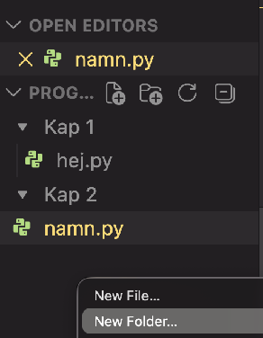
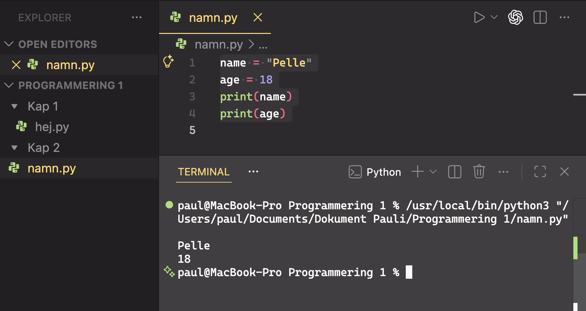

Programmering nivå 1 med Python
Kapitel 2: Variabler, datatyper och input
Detta kapitel visar hur program lagrar information, hur man tar emot input från användaren och hur man omvandlar datatyper.
Innehållsförteckning
Klicka på ett avsnitt för att hoppa direkt.
2.1 Vad är en variabel
När ett program körs behöver det kunna lagra information. Den informationen sparas i något som kallas variabler.
En variabel är en plats i datorns minne där ett värde lagras. Variabeln har ett namn så att programmet kan använda värdet senare.
Man kan tänka på en variabel som en låda med en etikett. Etiketten är variabelns namn och i lådan ligger värdet.
name = "Anna"Här skapas en variabel som heter name. Värdet som lagras i variabeln är texten
"Anna".
Programmet kan sedan använda variabeln senare i koden.
Variabler gör det möjligt att
- lagra information
- ändra värden
- använda värden flera gånger i ett program
2.2 Tilldela värden
När man ger en variabel ett värde kallas det att tilldela ett värde.
Det görs med likhetstecknet =.
name = "Anna"
age = 17Här skapas två variabler.
| Variabel | Värde |
|---|---|
name |
Anna |
age |
17 |
Programmet kan nu använda dessa värden i senare instruktioner.
Det är viktigt att komma ihåg att = i programmering betyder tilldela ett värde, inte
matematiskt lika med.
Testa nu att skriva in dessa koder i IDLE eller VS Code. I fortsättningen kommer jag skriva din kodeditor, editor eller IDE.
Skapa en ny mapp som heter kap 2 och i den skapa en fil du kallar namn.py.
En ny mapp gör du genom att två fingerklicka på macplattan eller högerklicka på datormusen. På svenska heter det sekundärklick på engelska context click.

I den skriver du till exempel
name = "Pelle"
age = 18
print(name)
print(age)Och kör programmet.
För att rensa i Terminalen skriv clear och klicka på Enter.

2.3 Datatyper
Information som lagras i variabler kan ha olika datatyper. Datatypen beskriver vilken typ av värde som lagras.
De vanligaste datatyperna i Python är:
- int - heltal
- float - decimaltal
- str - text
- bool - sant eller falskt
Exempel:
age = 17
temperature = 21.5
name = "Anna"
student = TrueDatatyper är viktiga eftersom Python behöver veta hur värden ska behandlas.
Övning 1
Skapa en ny fil i din projektmapp. Filen ska heta datatyper.py.
Skriv följande kod i filen.
age = 17
temperature = 21.5
name = "Anna"
student = True
print(type(age))
print(type(temperature))
print(type(name))
print(type(student))Kör programmet. Du kommer att se vilken datatyp varje variabel har.
<class 'int'>
<class 'float'>
<class 'str'>
<class 'bool'>Övning 2
Skapa fyra nya variabler i din fil.
En variabel för ditt namn, din ålder, din längd och om du är student (True eller False).
Skriv sedan ut datatyperna med type().
Fler exempel med type()
Testa att skriva följande kod.
print(type(10))
print(type(3.14))
print(type("Hej"))
print(type(True))Som du har sett kan man i Python kontrollera vilken datatyp ett värde har med funktionen
type().
age = 17
print(type(age))Det betyder att variabeln innehåller ett heltal.
Att använda type() är mycket användbart när man lär sig programmering. Det hjälper dig
att förstå vilken datatyp ett värde har, kontrollera att ett program fungerar som du tänkt och hitta
fel i din kod.
2.4 Skriva ut variabler
När man programmerar behöver man ofta visa information på skärmen. I Python görs detta med funktionen
print().
Funktionen print() används för att skriva ut text eller värden i terminalen.
Exempel:
name = "Anna"
print(name)Programmet skriver då ut:
AnnaHär händer två saker:
- Variabeln
nameskapas och får värdet"Anna". - Funktionen
print()skriver ut värdet som finns i variabeln.
Skriva ut text och variabler tillsammans
Man kan också skriva ut text tillsammans med variabler.
name = "Anna"
print("Hej", name)Programmet skriver då ut:
Hej AnnaPython sätter automatiskt ett mellanslag mellan värdena som skrivs ut.
Skriva ut flera variabler
Man kan skriva ut flera variabler samtidigt.
name = "Anna"
age = 17
print(name, age)Resultat:
Anna 17F-strängar
Ett annat sätt att skriva ut variabler tillsammans med text är att använda f-strängar.
En f-sträng börjar med bokstaven f före citattecknen.
name = "Anna"
print(f"Hej {name}")Programmet skriver ut:
Hej AnnaVariabeln placeras mellan { } i texten.
Man kan också använda flera variabler.
name = "Anna"
age = 17
print(f"{name} är {age} år gammal")Resultat:
Anna är 17 år gammalF-strängar gör ofta koden tydligare och lättare att läsa, därför används de ofta i Python.
Övning 1 - F-strängar
Skapa en ny Pythonfil i din mapp. Filen kan till exempel heta fstring.py.
Skriv följande kod.
name = "Alex"
age = 16
print(f"Hej {name}")
print(f"{name} är {age} år gammal")Kör programmet.
Övning 2 - F-strängar
Ändra programmet så att det använder dina egna uppgifter.
Programmet ska skriva ut något i stil med:
Hej Maria
Maria är 17 år gammalExtra uppgift
Lägg till en ny variabel som innehåller namnet på din favoritmat.
food = "pizza"
print(f"Min favoritmat är {food}")2.5 Input från användaren
Hittills har våra program bara skrivit ut information. Men program kan också ta emot information från användaren. Detta gör program mer interaktiva.
I Python används funktionen input() för att läsa in text från
användaren.
name = input("Vad heter du? ")När programmet körs visas frågan:
Vad heter du?Programmet väntar då på att användaren ska skriva något och trycka på Enter.
Om användaren skriver Erik sparas texten i variabeln name.
Använda input tillsammans med print
När informationen har sparats i en variabel kan den användas senare i programmet.
name = input("Vad heter du? ")
print(f"Hej {name}")Om användaren skriver Anna skriver programmet ut:
Hej AnnaFlera frågor
Ett program kan också ställa flera frågor.
name = input("Vad heter du? ")
city = input("Vilken stad bor du i? ")
print(f"Hej {name}")
print(f"Du bor i {city}")Programmet läser först in namnet och sedan staden.
Viktigt att veta
Information som kommer från input() är alltid text. Det betyder att
värdet sparas som datatypen str.
Senare i kapitlet kommer vi att se hur man kan omvandla text till tal.
Testa själv
Skapa en ny fil i din projektmapp som heter input_test.py.
Skriv följande kod.
name = input("Vad heter du? ")
age = input("Hur gammal är du? ")
print(f"Hej {name}")
print(f"Du är {age} år gammal")Kör programmet och svara på frågorna.
Övning
Skriv ett program som frågar användaren efter namn och favoritfärg.
Programmet ska sedan skriva ut en mening med hjälp av en f-sträng.
Hej Erik
Din favoritfärg är blå2.6 Typomvandling
I avsnittet om input() såg vi att program kan ta emot information från användaren. Men
det finns en viktig sak att känna till.
All information som kommer från input() sparas som text. Datatypen blir
alltså str.
age = input("Hur gammal är du? ")
print(type(age))Om användaren skriver 17 kommer programmet att visa <class 'str'>. Det betyder att
värdet 17 sparas som text, inte som ett tal.
Det kan skapa problem om man vill göra beräkningar.
age = input("Hur gammal är du? ")
print(age + 5)Detta ger ett TypeError eftersom Python inte kan lägga ihop text och tal.
Omvandla text till tal
För att lösa detta använder man typomvandling. Typomvandling betyder att man ändrar en datatyp till en annan.
De vanligaste funktionerna är:
int()- omvandlar till heltalfloat()- omvandlar till decimaltalstr()- omvandlar till text
Exempel med heltal
age = int(input("Hur gammal är du? "))
print(age + 5)Här händer tre saker:
- Programmet läser in text från användaren.
- Texten omvandlas till ett heltal med
int(). - Värdet sparas i variabeln
age.
Nu fungerar beräkningen.
Om användaren skriver 17 skriver programmet ut 22.
Exempel med decimaltal
temperature = float(input("Vad är temperaturen? "))
print(temperature + 1)Här omvandlas texten till ett decimaltal.
Kontrollera datatypen
Man kan använda type() för att kontrollera datatypen.
age = int(input("Hur gammal är du? "))
print(type(age))Resultatet blir <class 'int'>.
Testa själv
Skapa en ny fil som heter typomvandling.py.
age = int(input("Hur gammal är du? "))
print(f"Om fem år är du {age + 5} år gammal")Kör programmet och testa olika värden.
Övning
Skriv ett program som frågar användaren efter längd i centimeter.
Programmet ska sedan skriva ut:
Din längd är ___ cm
Om du växer 10 cm blir din längd ___ cmTips: använd int() för att omvandla värdet till ett tal.
2.7 Vanliga nybörjarfel
Vi har redan tagit upp delar av detta, men det är så viktigt att vi repeterar lite igen och tar med några nya saker att tänka på.
När man börjar programmera är det vanligt att göra små misstag i koden. Det är helt normalt. Alla programmerare gör fel ibland. Det viktiga är att lära sig hur man hittar och förstår felen.
Glömda citattecken
Text i Python måste stå inom citattecken.
Rätt kod:
print("Hej världen")Fel kod:
print(Hej världen)I den felaktiga koden förstår Python inte vad texten betyder eftersom citattecknen saknas.
Felstavade kommandon
Python känner bara igen kommandon som är stavade exakt rätt.
Rätt kod:
print("Hej")Fel kod:
prin("Hej")Om ett kommando är felstavat visar Python ett felmeddelande.
Saknade parenteser
Många funktioner i Python använder parenteser.
Rätt kod:
print("Hej")Fel kod:
print "Hej"Python kräver parenteser runt det som ska skrivas ut.
Fel datatyp
Ett annat vanligt fel är att försöka använda text som ett tal.
Fel kod:
age = input("Hur gammal är du? ")
print(age + 5)Här sparas värdet från input() som text. Python kan därför inte lägga till talet 5.
Rätt kod:
age = int(input("Hur gammal är du? "))
print(age + 5)Här omvandlas texten till ett heltal.
Felmeddelanden
När något är fel i ett program visar Python ett felmeddelande. Felmeddelandet berättar ofta vilken rad felet finns på och vilken typ av fel det är.
Det är därför viktigt att läsa felmeddelandet noggrant.
Sammanfattning
Några vanliga nybörjarfel är glömda citattecken, felstavade kommandon, saknade parenteser och fel datatyp.
Genom att läsa felmeddelanden och kontrollera koden noggrant kan man oftast hitta och rätta felet snabbt.
2.8 Övningar
I dessa övningar ska du använda det du har lärt dig i kapitel 1 och kapitel 2.
Du kommer att öva på print(), variabler, datatyper, type(),
input(), typomvandling och f-strängar.
Skriv varje program i en egen .py-fil i din projektmapp.
Övning 1 - Presentera dig
Skriv ett program som skriver ut "Hej jag heter ditt namn". Skapa först en variabel med ditt namn och
använd sedan print().
name = "Anna"
print(f"Hej jag heter {name}")Övning 2 - Datatyper
Skapa fyra variabler: namn, ålder, längd och student (True eller False). Skriv sedan ut datatypen för
varje variabel med type().
name = "Anna"
age = 17
height = 170
student = True
print(type(name))
print(type(age))
print(type(height))
print(type(student))Övning 3 - Fråga efter namn
Skriv ett program som frågar användaren efter sitt namn och skriver ut en hälsning.
Programmet ska skriva ut:
Hej ditt namnÖvning 4 - Ålder
Skriv ett program som frågar användaren efter sin ålder.
Programmet ska skriva ut:
Du är ett antal år gammal
Om fem år är du ett antal år gammalTips: använd int().
Övning 5 - Längd
Skriv ett program som frågar användaren efter sin längd i centimeter.
Programmet ska skriva ut:
Din längd är ett antal centimeter
Om du växer tio centimeter blir din längd ett antal centimeterÖvning 6 - Favoritfilm
Skriv ett program som frågar användaren efter namn och favoritfilm.
Programmet ska skriva ut:
Hej ditt namn
Din favoritfilm är filmens namnÖvning 7 - Kontrollera datatyper
Skriv ett program som innehåller följande värden: 10, 3.14, "Hej" och True.
Använd type() för att skriva ut vilken datatyp varje värde har.
Övning 8 - Tre frågor
Skriv ett program som frågar användaren efter namn, stad och favoritmat.
Programmet ska sedan skriva ut en kort presentation.
Hej Erik
Du bor i Malmö
Din favoritmat är pizza2.9 Reflektionsfrågor
Fundera på frågorna nedan. Du kan diskutera dem med en klasskamrat eller skriva ner dina svar.
- Vad är en variabel? Förklara med egna ord.
- Varför använder man variabler i program?
- Vad är en datatyp?
- Ge exempel på fyra vanliga datatyper i Python.
- Vad gör funktionen
type()? - Vad gör funktionen
input()? - Varför behöver man ibland använda
int()när man använderinput()? - Vad är en f-sträng och varför är den användbar?
- Ge ett exempel på ett enkelt program som använder variabler.
- Varför är det viktigt att läsa felmeddelanden när ett program inte fungerar?